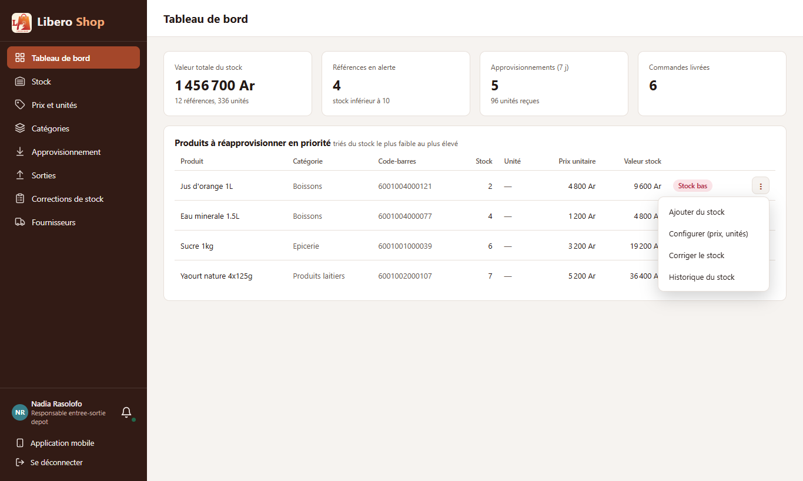
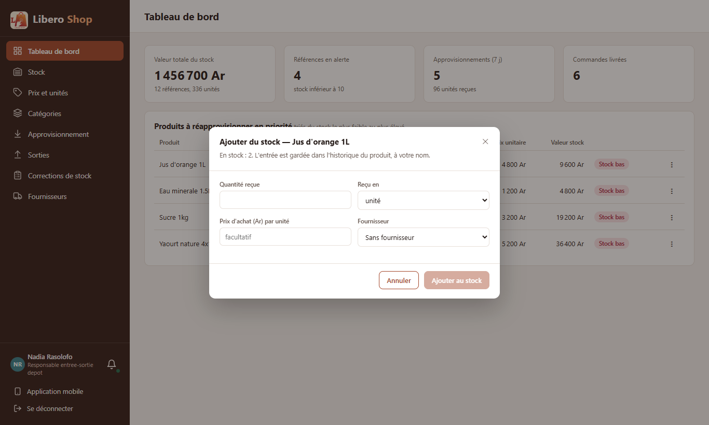
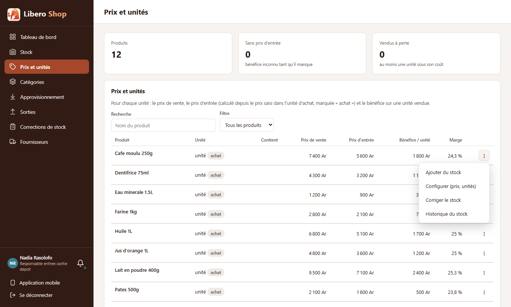
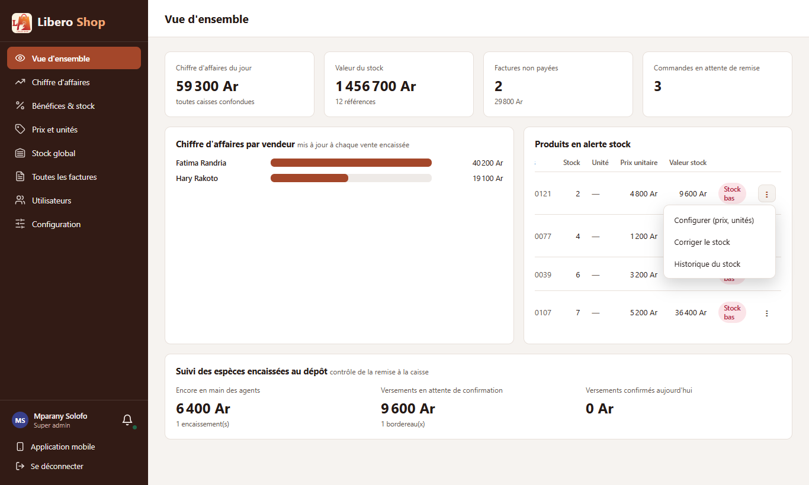
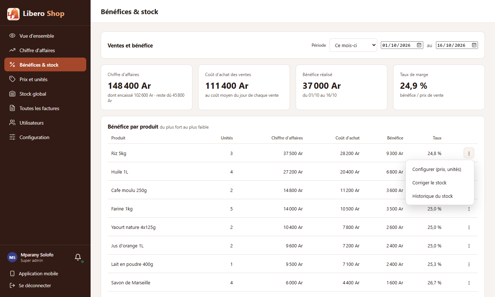

← Tous les comptes rendus de l'interface
UI-01Le menu « ⋮ » du produit sur tous les écrans
- Le tableau de bord du stock et la vue d'ensemble de l'administrateur ont maintenant un « ⋮ » sur chaque produit en alerte.
- On réapprovisionne un produit en alerte sans quitter le tableau de bord : « ⋮ » → « Ajouter du stock ».
- Prix et unités perd ses deux boutons « Configurer » et « ＋ Stock » : il montre le même « ⋮ » que l'écran Stock.
- Bénéfices & stock a un « ⋮ » sur chaque ligne de « Bénéfice par produit ».
- Le menu reste filtré par le rôle : l'administrateur n'a pas « Ajouter du stock », le responsable de dépôt l'a.
1. Le problème
Le menu « ⋮ » d'un produit (ajouter du stock, configurer, corriger, historique) n'existait que sur les écrans Stock et Stock global. Sur le tableau de bord, on voyait le produit en alerte, mais pour le réapprovisionner il fallait changer de page et le rechercher. Sur Prix et unités, le même produit se manipulait avec deux boutons différents.
2. Ce qui a été fait
Aucun nouveau composant : le menu existant (app-product-menu) et ses fenêtres (app-product-dialogs)
sont branchés sur les quatre écrans qui ne les avaient pas. Après une action (stock ajouté, prix changé), l'écran relit ses
chiffres tout seul.
3. Le résultat en images
Tableau de bord du stock
Nadia — responsable de dépôt Les produits à réapprovisionner ont leur « ⋮ » au bout de la ligne.

« Ajouter du stock » ouvre la fenêtre de réception par-dessus le tableau de bord, avec le produit déjà choisi.

Prix et unités
Nadia — responsable de dépôt Les boutons « Configurer » et « ＋ Stock » sont remplacés par le même « ⋮ ».

Vue d'ensemble et Bénéfices & stock
Mparany — administrateur L'administrateur n'a pas « Ajouter du stock » (réservé au responsable de dépôt) : son menu commence par « Configurer ».


4. Tableau récapitulatif
| Fichier | Changement |
|---|---|
features/depot-manager/manager-dashboard.component.ts | tableau en mode « gestion » + fenêtres du produit |
features/admin/admin-overview.component.ts | idem pour les produits en alerte |
features/catalog/product-prices.component.ts | deux boutons remplacés par app-product-menu |
features/admin/margin.component.ts | « ⋮ » sur chaque ligne de « Bénéfice par produit » ; chiffres relus après une action |
features/catalog/product-prices.component.spec.ts | tests : un menu par produit ; « Ajouter du stock » pour le responsable de dépôt seulement |
Tests : tests de l'interface (ng test) au vert. Aucun changement côté serveur.